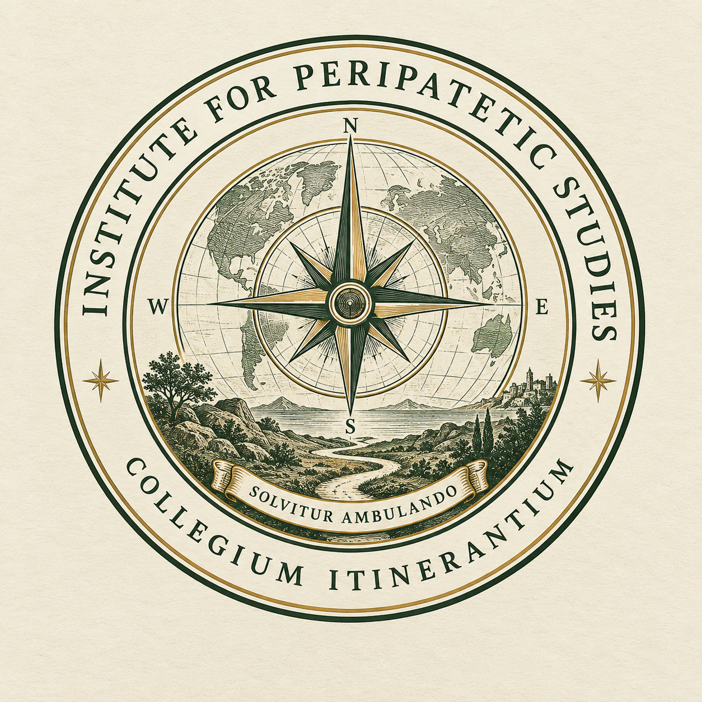

Institute for Peripatetic Studies
Collegium Itinerantium
Solvitur Ambulando
Official Record
Doctor of Peripatetic Studies
October 1, Anno Domini MMXXIV
Dear Dr. Johns,
This instrument records the conferral by the Institute for Peripatetic Studies of the degree of Doctor of Peripatetic Studies (D.P.S.) upon Bryan Johns, Founding Director of the Institute, this First Day of October in the Year Two Thousand and Twenty-Four.
The degree is awarded in recognition of the establishment of Peripatetics as a formal intellectual discipline; of sustained engagement with places, landscapes, and the knowledge produced through movement and direct observation; of the founding of the Institute for Peripatetic Studies together with its governance structures, academic framework, and ceremonial apparatus; and of the considered judgment that one ought, in such circumstances, to confer upon oneself an appropriate credential.
The Doctor of Peripatetic Studies is the highest distinction the Institute confers. It carries with it the full authority of the Institute's academic framework, the endorsement of its founding principles, and the right to sign correspondence with the post-nominal letters D.P.S., which the Institute encourages its founding doctor to use frequently and with conviction.
The Institute notes, as a matter of institutional record, that the doctorate was conferred by the Founding Director upon himself, in the time-honored tradition of self-founded institutions, and that this circumstance is considered a feature rather than a deficiency of the Institute's academic design.
Solvitur ambulando.
Issued under the authority of the Institute,
Bryan Johns
Bryan Johns, D.P.S.
Founding Director
Institute for Peripatetic Studies